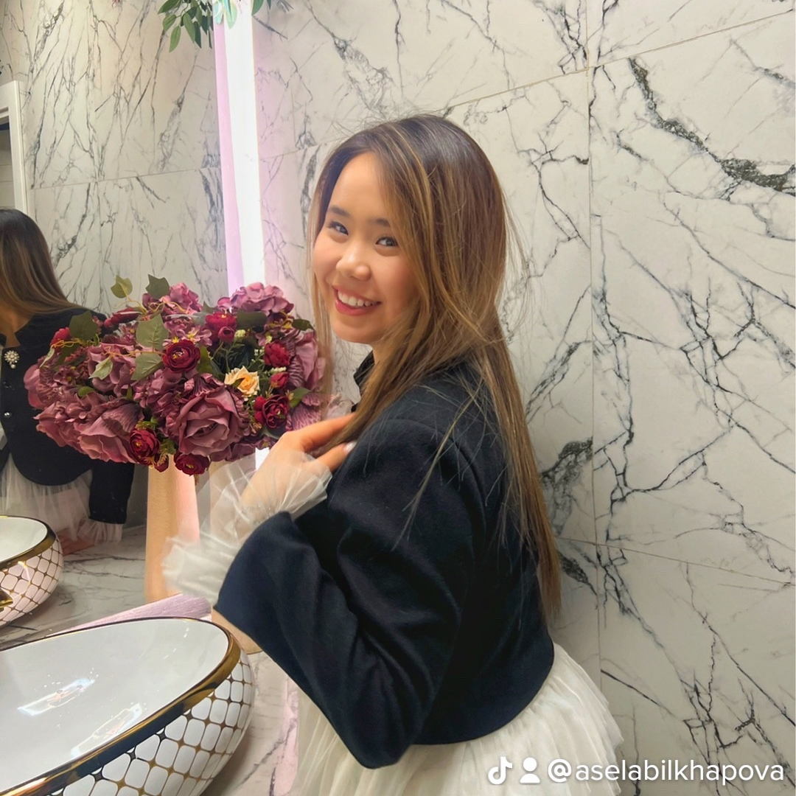
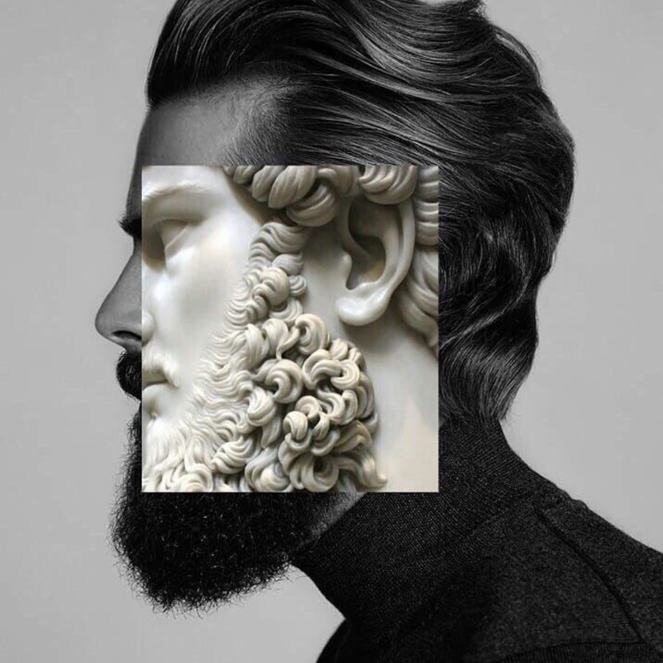
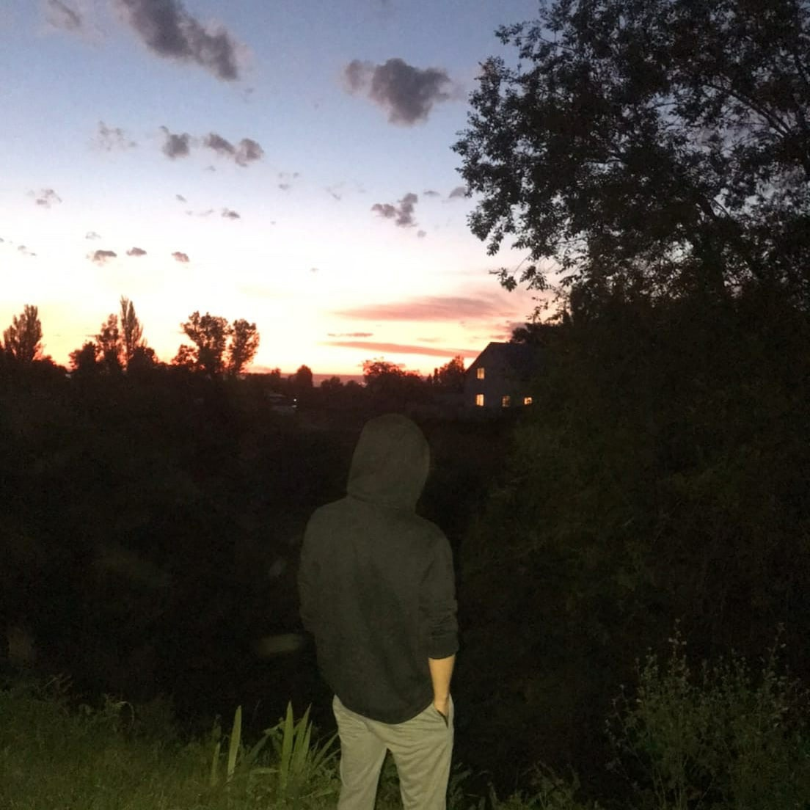
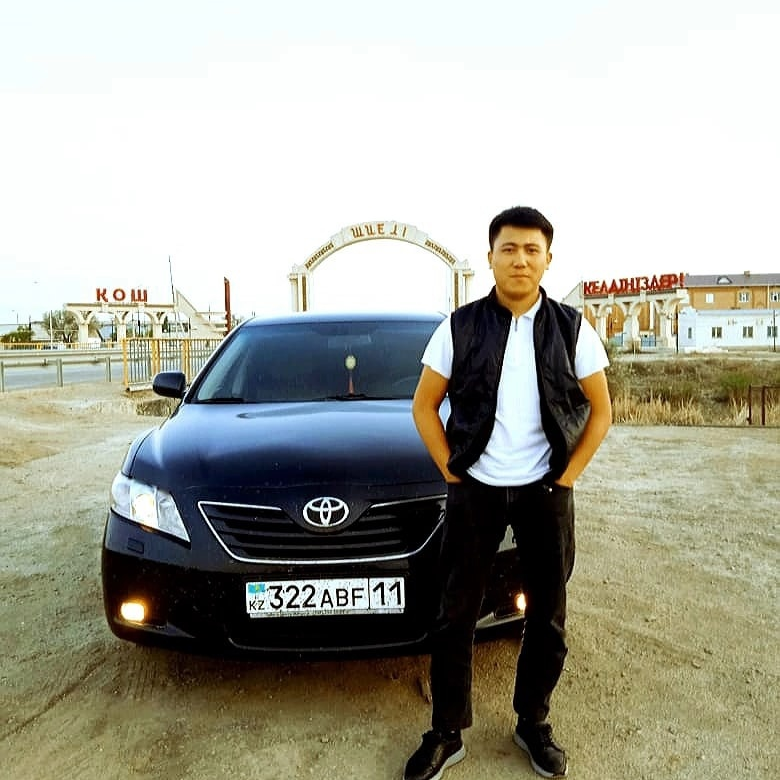
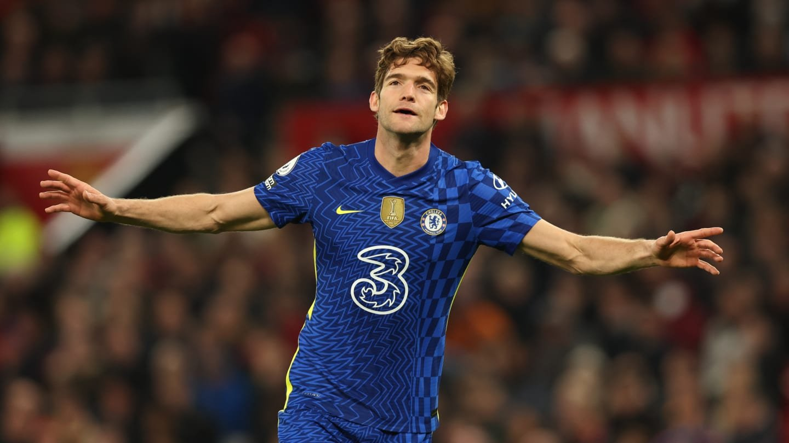
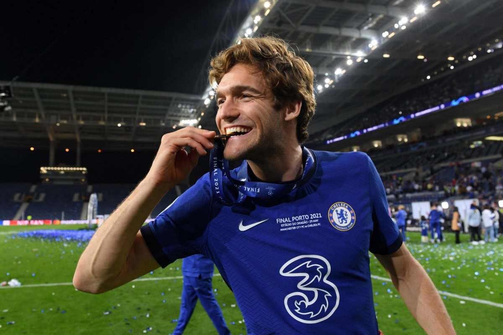
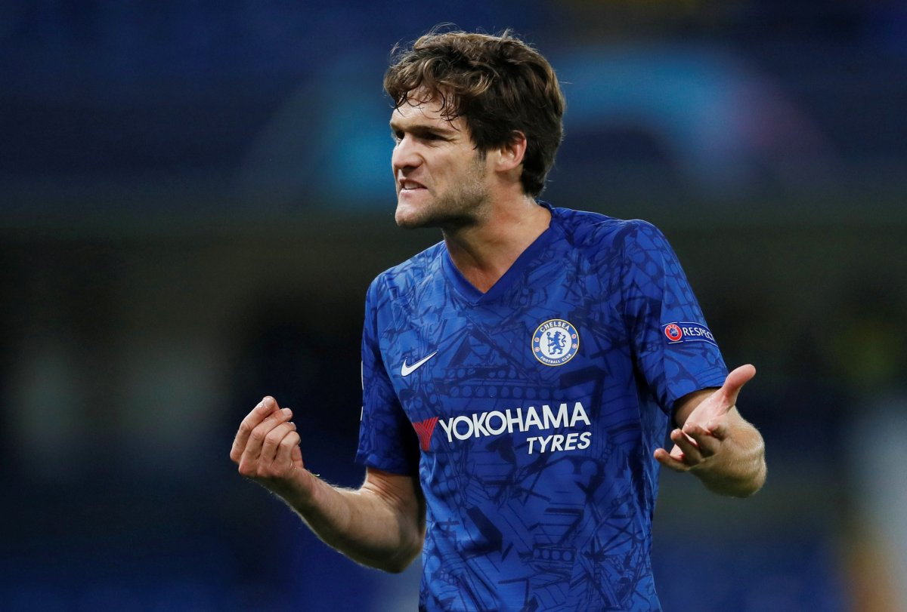
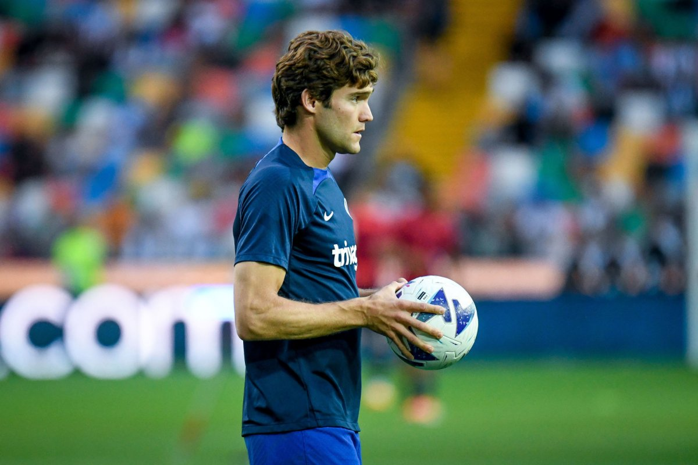

Друзья 1331
Магжан

Жанель
 Айзат
Айзат

Елнур

Ерайдын

Абылхаир
Ilyas Zhuanyshev
Online
Life is good :)
Дата рождения:
Город:
Семейное положение:
Место работы:
Веб-сайт:
26 мая 1989 г.
Алматы
Женат
BITLAB Academy
http://www.zhuanyshev.kz
1 331
друг
224
подписчика
95
фотографии
969
видеозаписей
809
аудиозаписей
140
страниц
Мои фотографии
95




Выдержка из интервью Льюиса Хэмилтона и Тото Вольффа: Вопрос: Себастьян долго ехал за вами - вы
ожидали подобного? Льюис Хэмилтон: Да, Себастьян был очень близко. Если бы мы поменялись ролями,
и Себастьян был впереди, то он, возможно, создал отрыв. У Ferrari был выше темп на UltraSoft. На
втором отрезке уже мой темп был выше, но я остановился настолько рано, что не знал, выдержит ли
резина. Я не хотел атаковать, чтобы сократить отставание, зная, что я в любом случае не смогу
обогнать - я бы только испортил шины и уступил